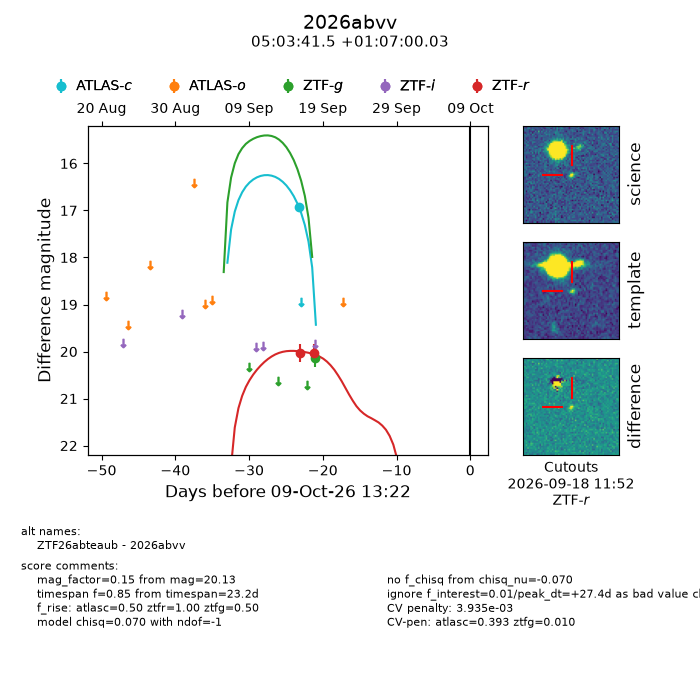
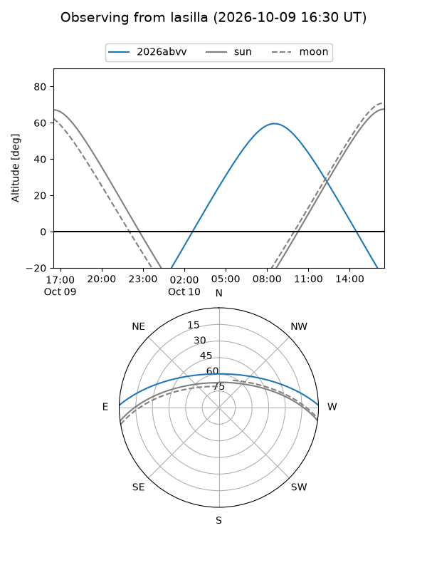
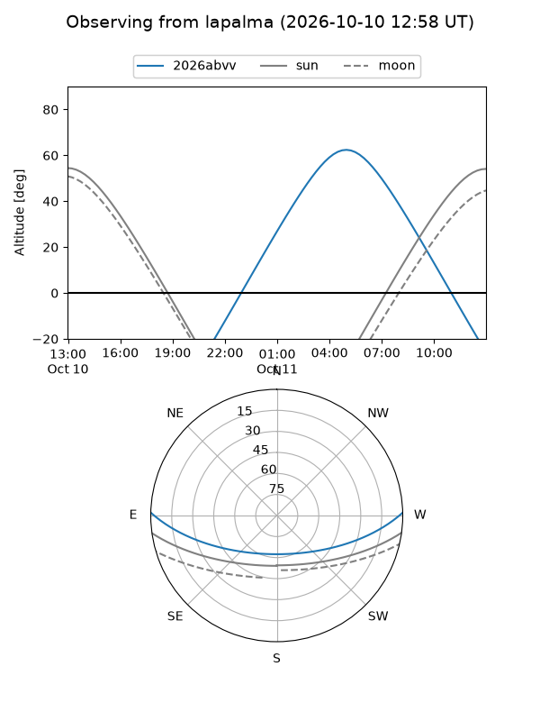
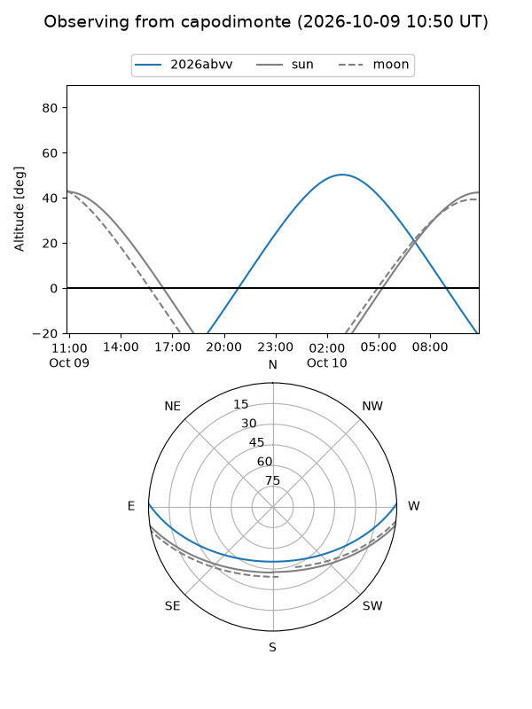
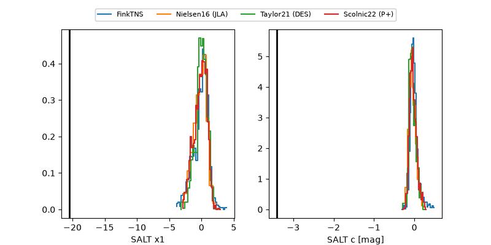

2026abvv
Target 2026abvv at 2026-10-09 13:25
Aliases and brokers:
FINK-ZTF: ztf.fink-portal.org/ZTF26abteaub
Lasair-ZTF: lasair-ztf.lsst.ac.uk/objects/ZTF26abteaub
ALeRCE-ZTF: alerce.online/object/ZTF26abteaub
YSE-PZ: ziggy.ucolick.org/yse/transient_detail/2026abvv
TNS name: wis-tns.org/object/2026abvv
Direct TNS query: direct search
alt names
ZTF26abteaub (ztf,fink_ztf)
2026abvv (tns,yse)
Coordinates:
equatorial (ra, dec) = 75.9231,+1.11668
equatorial (HMS+DMS) = 05:03:41.54,+01:07:00.03
galactic (l, b) = (198.8333,-23.21625)
Flags:
peak dt: +27.4
likely cv: !!
CV pen: 0.003934947056837818
Photometry:
last atlasc=16.92, ztfg=20.13, ztfr=20.03
1 atlasc, 1 ztfg, 2 ztfr detections
Lightcurve

Visibility



Additional plots
